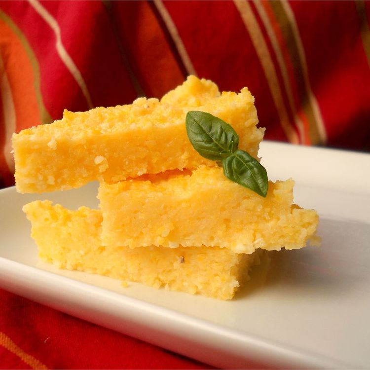

Polenta

Simple directions on how to cook plain polenta. There are many options for polenta once it is cooked: you can mix in fresh herbs and cheeses, bake it, or fry it! Experiment and choose your favorite technique!
Ingredients
3 cups water
1 cup polenta corn flour
Steps
- Bring water to a boil. Reduce to a simmer.
- Pour in polenta steadily, stirring constantly. Continue to stir until polenta is thickened. It should come away from sides of the pan, and be able to support a spoon.
- Pour polenta onto a wooden cutting board, let stand for a few minutes.
← Back Home